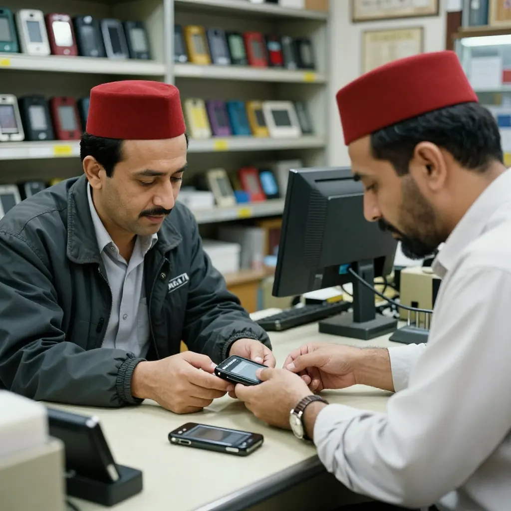

📚 文章 ↔ 小紅書對應Blog Posts ↔ RED Versions
每篇文章都有對應嘅小紅書版本，撳「複製文案」即貼得。 Every blog post has a corresponding RED version. Click "Copy Notes" to paste.


2026-09-12 · 外貿創業 · ✅ 已發佈
一張400粒鑲石訂單400 Zircons Order
2008年紐約設計師Stephanie飛嚟廣州，要我將手錶手機鑲滿400粒鋯石。嗰陣時Apple Watch仲未出，我哋係全世界第一個做呢樣嘢嘅人⋯

2026-09-11 · 文化交流
一個烏干達老師嘅廣州漂A Ugandan Teacher's GZ Story
Fank係我喺廣州小北撞到嘅烏干達老師，本來請佢教我個仔英文，後來佢做咗廣州大學嘅教授⋯
2026-09-11 · 外貿故事
賠咗一單，賠出個總統親戚Lost One Order, Won a President
2000年廣州小北，非洲女客手机被偷要我賠。我蝕底赔咗，點知佢哥哥後來做咗非洲總統⋯


2026-09-04 · 外貿反轉
點解要搞砸張單？因為個客玩緊海選Why I Sabotaged an Order
澳洲客用5000蚊試勻全中國，識破之後我專登做慢做細做爛，同時關門改技術⋯

2026-09-04 · 產品創新
5000蚊買咗個專利，意外做咗手錶手機5000 HKD Bought a Patent
嗰5000蚊買嘅唔止係專利，係成個行業嘅入場券。比Apple Watch早咗九年⋯
💡 使用說明
獨立站連結去深度長文版（含 SEO、AI 配圖、FAQ、JSON-LD），適合海外讀者 + 搜尋引擎；
複製文案會顯示小紅書文案模板（標題選項、Hook、Hashtag），你可以 Copy & Paste 到小紅書後台，配合獨立站嘅配圖直接發布。
建議發布時間：週二至週四 19:30-21:30（小紅書女性活躍高峰）。